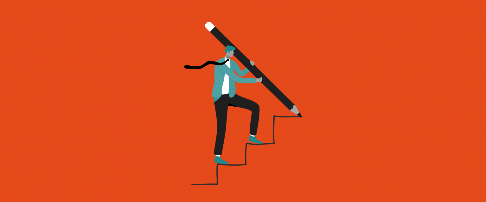

Motivação
O que é?
A motivação é o que explica por que pessoas ou animais iniciam, continuam ou terminam um certo comportamento em um
momento determinado. Os estados motivacionais são comumente entendidos como forças atuantes dentro do agente que
criam uma disposição para se envolver em um comportamento direcionado a um objetivo.